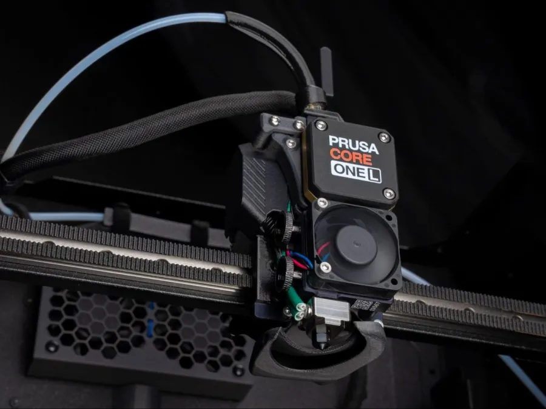

HTホットエンド · 最高400℃HT hotend · up to 400 °C
熱・油・薬品にさらされる部品まで、社内で。Parts that face heat, oil and chemicals, made in-house.
400℃まで上がるHTホットエンドで、PPSやPPAなどの高機能樹脂を造形できます。これまで外注や長い納期に頼っていた治具や保守部品を、社内でつくれるようになります。The HT hotend reaches 400 °C, hot enough for high-performance polymers such as PPS and PPA. Jigs and spare parts that used to mean outsourcing and long lead times can be made in-house.
- PPS-CF
- 耐薬品性。200℃未満で溶かす既知の溶剤がなく、UL94 V-0 の自己消火性Chemical resistance: no known solvent below 200 °C, UL94 V-0 self-extinguishing
- PPS-GF
- 電気を通さず、無線信号を遮らない。寸法安定性が高いNon-conductive, transparent to radio signals, dimensionally stable
- PPA-CF
- 耐摩耗。油・燃料に強く、アニール後の耐熱は最大199℃Wear resistant, withstands oil and fuel, up to 199 °C after annealing
高温プロファイルで、標準材料の層間強度も向上します（PA11 CF +23%、ASA +18%）。High-temperature profiles also strengthen standard materials between layers (PA11 CF +23%, ASA +18%).